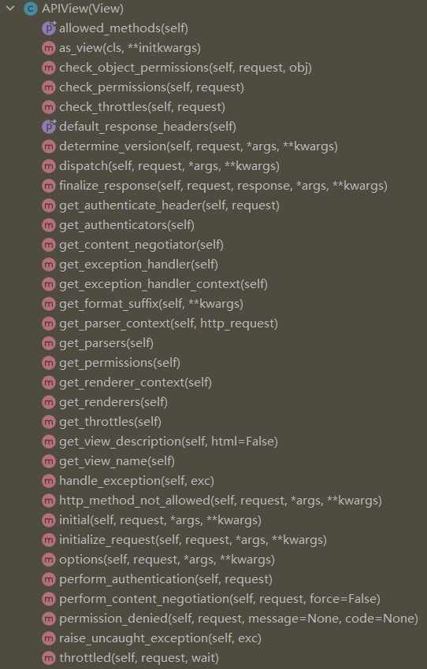
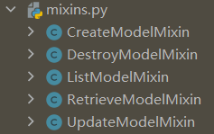
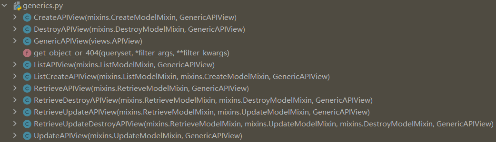
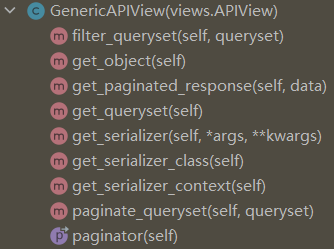

4 DRF类视图让你的代码DRY起来¶

刚开始写views.py模块的代码，一般都是用def定义的函数视图，不过DRF更推荐使用class定义的类视图，这能让我们的代码更符合DRY（Don’t
Repeat Yourself）设计原则：

使用APIView¶
rest_framework.views.APIView是DRF封装的API视图，继承了django.views.generic.base.View：

我们用它把函数视图改写成类视图，编辑snippets/views.py：
from snippets.models import Snippet
from snippets.serializers import SnippetSerializer
from django.http import Http404
from rest_framework.views import APIView
from rest_framework.response import Response
from rest_framework import status
class SnippetList(APIView):
"""
List all snippets, or create a new snippet.
"""
def get(self, request, format=None):
snippets = Snippet.objects.all()
serializer = SnippetSerializer(snippets, many=True)
return Response(serializer.data)
def post(self, request, format=None):
serializer = SnippetSerializer(data=request.data)
if serializer.is_valid():
serializer.save()
return Response(serializer.data, status=status.HTTP_201_CREATED)
return Response(serializer.errors, status=status.HTTP_400_BAD_REQUEST)
class SnippetDetail(APIView):
"""
Retrieve, update or delete a snippet instance.
"""
def get_object(self, pk):
try:
return Snippet.objects.get(pk=pk)
except Snippet.DoesNotExist:
raise Http404
def get(self, request, pk, format=None):
snippet = self.get_object(pk)
serializer = SnippetSerializer(snippet)
return Response(serializer.data)
def put(self, request, pk, format=None):
snippet = self.get_object(pk)
serializer = SnippetSerializer(snippet, data=request.data)
if serializer.is_valid():
serializer.save()
return Response(serializer.data)
return Response(serializer.errors, status=status.HTTP_400_BAD_REQUEST)
def delete(self, request, pk, format=None):
snippet = self.get_object(pk)
snippet.delete()
return Response(status=status.HTTP_204_NO_CONTENT)
类视图的代码跟函数视图是非常类似的，区别在于GET、POST等方法是用的函数而不是if语句，可以更好的解耦代码。
改了views.py代码后，需要同时修改snippets/urls.py：
from django.urls import path
from rest_framework.urlpatterns import format_suffix_patterns
from snippets import views
urlpatterns = [
path('snippets/', views.SnippetList.as_view()),
path('snippets/<int:pk>/', views.SnippetDetail.as_view()),
]
urlpatterns = format_suffix_patterns(urlpatterns)
为什么要加个``as_view()``方法？
因为path()的参数必须是可调用的，在源码中能看到elif callable(view)：
def _path(route, view, kwargs=None, name=None, Pattern=None):
if isinstance(view, (list, tuple)):
# For include(...) processing.
pattern = Pattern(route, is_endpoint=False)
urlconf_module, app_name, namespace = view
return URLResolver(
pattern,
urlconf_module,
kwargs,
app_name=app_name,
namespace=namespace,
)
# callable判断
elif callable(view):
pattern = Pattern(route, name=name, is_endpoint=True)
return URLPattern(pattern, view, kwargs, name)
else:
raise TypeError('view must be a callable or a list/tuple in the case of include().')
as_view()方法返回了一个内部定义的可调用函数：
@classonlymethod
def as_view(cls, **initkwargs):
"""Main entry point for a request-response process."""
for key in initkwargs:
if key in cls.http_method_names:
raise TypeError(
'The method name %s is not accepted as a keyword argument '
'to %s().' % (key, cls.__name__)
)
if not hasattr(cls, key):
raise TypeError("%s() received an invalid keyword %r. as_view "
"only accepts arguments that are already "
"attributes of the class." % (cls.__name__, key))
# 内部定义了可调用函数
def view(request, *args, **kwargs):
self = cls(**initkwargs)
self.setup(request, *args, **kwargs)
if not hasattr(self, 'request'):
raise AttributeError(
"%s instance has no 'request' attribute. Did you override "
"setup() and forget to call super()?" % cls.__name__
)
return self.dispatch(request, *args, **kwargs)
view.view_class = cls
view.view_initkwargs = initkwargs
# take name and docstring from class
update_wrapper(view, cls, updated=())
# and possible attributes set by decorators
# like csrf_exempt from dispatch
update_wrapper(view, cls.dispatch, assigned=())
return view
使用mixins¶
DRF提供了rest_framework.mixins模块，封装了类视图常用的增删改查方法：

比如新增CreateModelMixin：
class CreateModelMixin:
"""
Create a model instance.
"""
def create(self, request, *args, **kwargs):
serializer = self.get_serializer(data=request.data)
serializer.is_valid(raise_exception=True)
self.perform_create(serializer)
headers = self.get_success_headers(serializer.data)
return Response(serializer.data, status=status.HTTP_201_CREATED, headers=headers)
def perform_create(self, serializer):
serializer.save()
def get_success_headers(self, data):
try:
return {'Location': str(data[api_settings.URL_FIELD_NAME])}
except (TypeError, KeyError):
return {}
类视图继承了Mixin后，可以直接使用它的.create()方法，类似的还有.list()、.retrieve()、.update()和.destroy()。我们按照这个思路来简化snippets/views.py代码：
from snippets.models import Snippet
from snippets.serializers import SnippetSerializer
from rest_framework import mixins
from rest_framework import generics
class SnippetList(mixins.ListModelMixin,
mixins.CreateModelMixin,
generics.GenericAPIView):
queryset = Snippet.objects.all()
serializer_class = SnippetSerializer
def get(self, request, *args, **kwargs):
return self.list(request, *args, **kwargs)
def post(self, request, *args, **kwargs):
return self.create(request, *args, **kwargs)
class SnippetDetail(mixins.RetrieveModelMixin,
mixins.UpdateModelMixin,
mixins.DestroyModelMixin,
generics.GenericAPIView):
queryset = Snippet.objects.all()
serializer_class = SnippetSerializer
def get(self, request, *args, **kwargs):
return self.retrieve(request, *args, **kwargs)
def put(self, request, *args, **kwargs):
return self.update(request, *args, **kwargs)
def delete(self, request, *args, **kwargs):
return self.destroy(request, *args, **kwargs)
瞬间少了好多代码，真够DRY的。
什么是mixin？
维基百科的解释：
In object-oriented programming languages, a mixin (or mix-in) is a class that contains methods for use by other classes without having to be the parent class of those other classes.
不太好理解。
换句话说，mixin类提供了一些方法，我们不会直接用这些方法，而是把它添加到其他类来使用。
还是有点抽象。
再简单点说，mixin只不过是实现多重继承的一个技巧而已。
这下应该清楚了。
使用generics¶
如果仔细看snippets/views.py的代码，就会发现我们用到了from rest_framework import generics：

和generics.GenericAPIView：

这是DRF提供的通用API类视图，mixins只提供了处理方法，views.py中的类要成为视图，还需要继承GenericAPIView，GenericAPIView继承了本文第一小节提到的rest_framework.views.APIView。除了GenericAPIView，我们还可以用其他的类视图进一步简化代码：
from snippets.models import Snippet
from snippets.serializers import SnippetSerializer
from rest_framework import generics
class SnippetList(generics.ListCreateAPIView):
queryset = Snippet.objects.all()
serializer_class = SnippetSerializer
class SnippetDetail(generics.RetrieveUpdateDestroyAPIView):
queryset = Snippet.objects.all()
serializer_class = SnippetSerializer
看看ListCreateAPIView的源码：
class ListCreateAPIView(mixins.ListModelMixin,
mixins.CreateModelMixin,
GenericAPIView):
"""
Concrete view for listing a queryset or creating a model instance.
"""
def get(self, request, *args, **kwargs):
return self.list(request, *args, **kwargs)
def post(self, request, *args, **kwargs):
return self.create(request, *args, **kwargs)
真DRY！
小结¶
学到这里，已经开始感受到了Django REST framework的强大之处了，我觉得学一个框架，不仅要看如何使用，还需要了解它的设计思路和底层实现，这样才能更好的总结为自己的编程思想，写出更漂亮的代码。